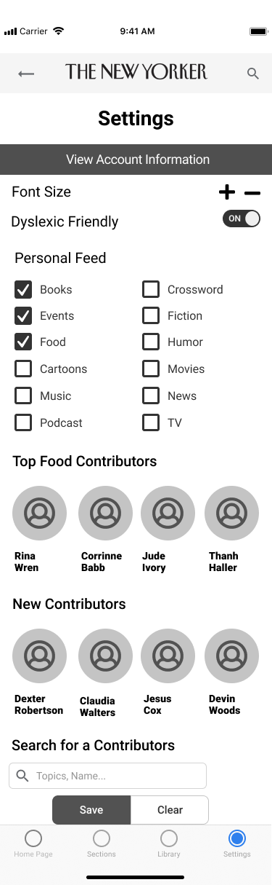
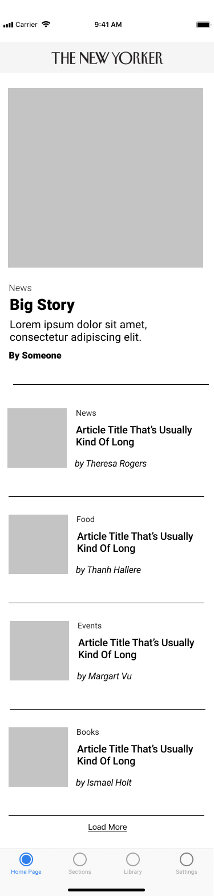

Role:
UX ResearcherTime Frame:
Feb - April 2021
Objectives:
Review the The New Yorker's app and find ways to develop it to be more user friendly.
About The New Yorker
The New Yorker is a NYC-based weekly magazine that averages around 1.2 million in total circulation
It is renowned for its in-depth reporting, political and cultural commentary, fiction, poetry, and humor
Currently, the physical magazine is being delivered weekly and the digital magazine features audio reading of articles, podcasts, videos, and the iconic crossword puzzle
Current App Analysis:
Articles are not categorized and are in random order
No way to navigate through podcasts and videos
Cartoons are also randomized
Settings do not support many accessibility options
Competitive Analysis
The New York Times
User can customize their content when they first open the app
Trending stories about breaking news is in one tab while customized stories are in another
Offline settings allow users to read without internet
Trending hashtags are customized to user’s tweets and interests
Emerging of memes that popularize news and culture
Liked tweets are saved and are public, saved tweets are private
The Atlantic
Articles are categorized by sections
Highlighted articles on the home page feature a short description of the full article
Extensive accessibility options like text size and dyslexic-friendly font
Research
Readership is low with 18 - 40 young adults. Younger adults are influenced heavily by trends they see in social media. During covid-19 news coverage this remand true regardless of race.
User and Audience
Most of the readers of the New Yorker are between ages 30 and 64, with 81% college educated. Many readers are also said to be middle class readers with upper class aspirations.
The project is focused on young adults and improving the app experience so they well use the app.
Goals
Redesign the app to give the user more control of the app
Improve the reading experience with customizations.
Improve the app to give better accessibility options
Empathy Interviews
I interviewed three people to gain inside into reading habits of 18-40 year olds
From the information I gathered I found the reading habits in the group where on the phone or a table. They wanted a trusted sorces who could provide solid news stories. Over all they felt the New Yorker was stuffy and not something of intrest
Survey Resuleds
I conducted a survey online asking people if they fallowed poeple online 70% of the responds where they did, in the 18 to 40 demophrafic
Affinity Mapping
Key Points
We found a wide variety of media format preferences and reading habits which was an interesting take on how some apps cater to this diverse pool of users.
People rely on social media for different media
Persona
Job to Be Done
“When I am wanting to read the news I want one place to read all the information I need. I want to know about local events and read about book trends.”

Mock up
 Final Thoughts
Users were happy with being able to customize their viewing experience. And enjoy having choices. For content-centric apps, users like to have content to be hyper-focused on their needs, wants, and surroundings especially if they pay for the app or service. They want to quickly find what they already like, and be recommended with similar content. Accessibility features like the transcript function and text talk functionality was successful as some users stated how they were unaware of having this option. For further development, things such as a more personalized home and content selection for podcast, text size, display options would aid in a better experience. Our interviewees use their phone and mobile apps extensively, but preferred to read on bigger screens like iPads, desktop, kindles, etc. We could explore phone mobile delighters